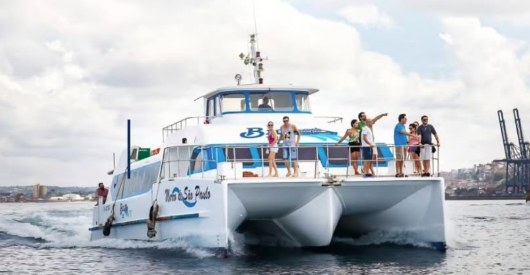
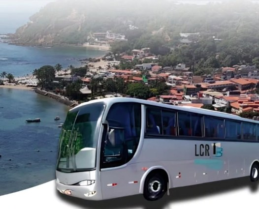
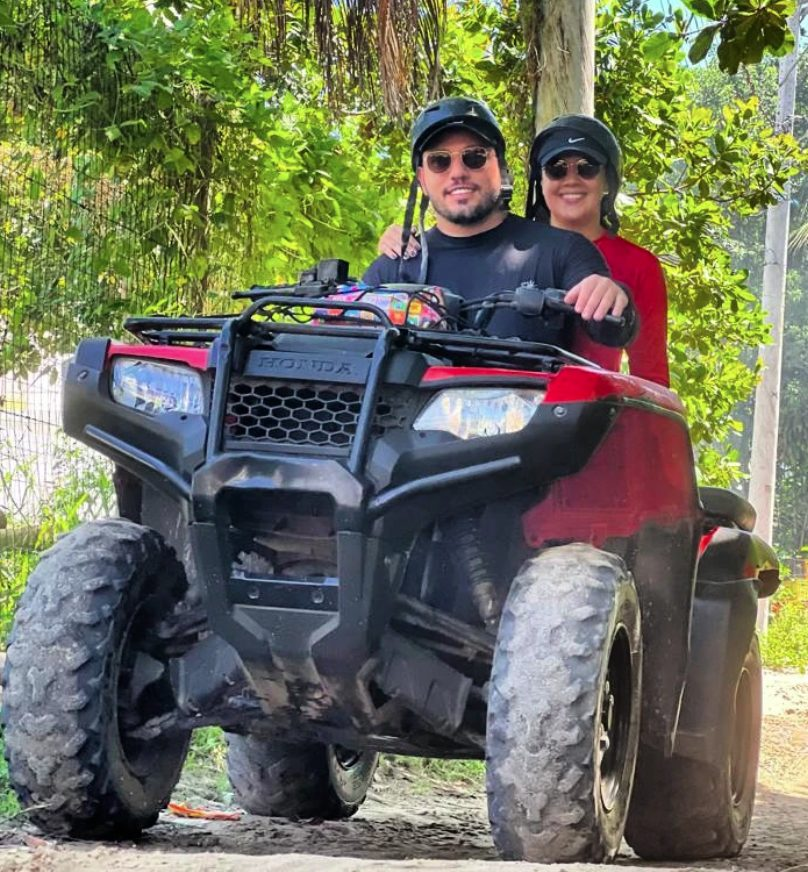
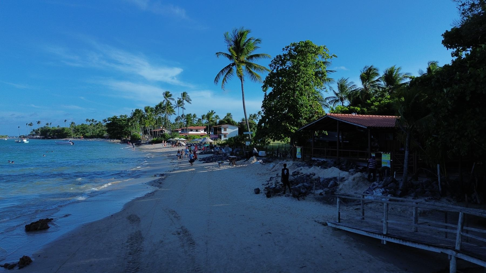
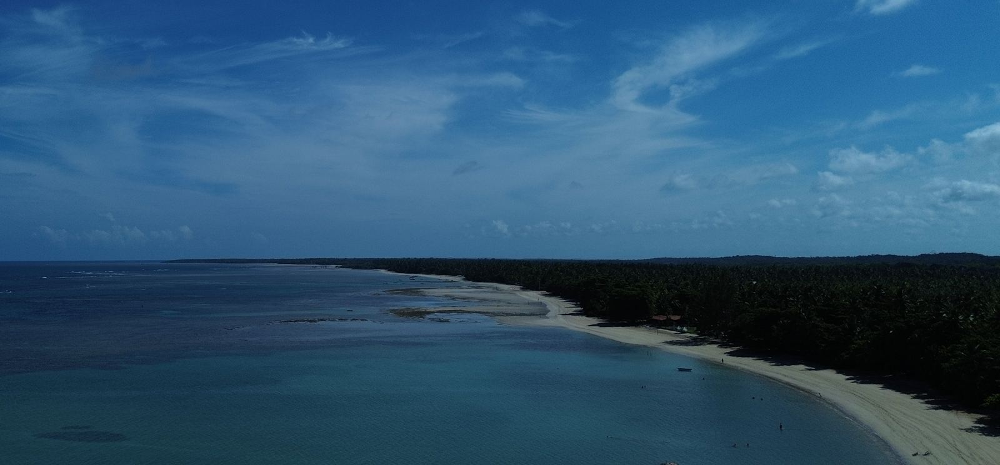

Travessia aprox. 2h30A forma mais rápida e prática
Transporte de Catamarã
- Mais rápido: travessia marítima em menos tempo
- Conforto: uma viagem tranquila no mar
- Segurança: equipe experiente e todos os equipamentos exigidos
Agência receptiva em Morro de São Paulo
Há mais de 20 anos levando você aos melhores passeios da ilha. Experiências únicas, com atendimento personalizado de quem mora aqui.
Duas formas de fazer a travessia, as duas com equipe experiente e todos os equipamentos exigidos.

Travessia aprox. 2h30A forma mais rápida e prática

Travessia aprox. 3h30Conforto e praticidade
Saídas diárias. Consulte horários e disponibilidade.
Reservar semi-terrestreDo mar à estrada de areia: escolha o passeio que combina com o seu grupo. Valores e datas pelo WhatsApp.
Contorne Morro de São Paulo pelo mar, com vista do farol e das praias.
Reservar no WhatsAppUma praia de coqueirais e águas calmas, para desacelerar de vez.
Reservar no WhatsApp
Aventura por trilhas e paisagens da ilha. Para quem quer adrenalina e boas fotos.
Reservar no WhatsApp
Navegue num barco tradicional e chegue a Gamboa com calma e bom astral.
Reservar no WhatsApp
Chegue a Gamboa de caminhão 6x6, numa viagem diferente e cheia de emoção.
Reservar no WhatsAppConte o que você quer fazer e a gente monta o roteiro ideal para o seu grupo.
Montar meu roteiroFale com a nossa equipe local e diga o que você quer fazer.
A gente indica as melhores opções para o seu grupo e consulta a disponibilidade.
Com a reserva confirmada, é só aproveitar a ilha.
Fale agora com a Inovatur e garanta o seu lugar.
Fazer minha reservaWhatsApp (75) 99147-0611